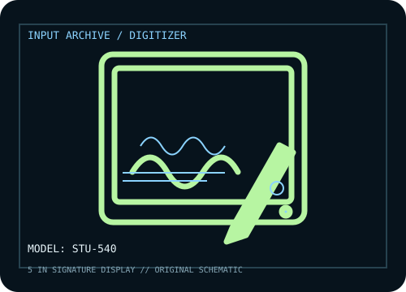

[ PEN TABLETS AND DIGITIZERS // IDENTIFIED COMPONENT ]
Wacom STU-540
Color LCD signature pad designed for secure business capture workflows rather than general drawing.

MODEL IDENTIFICATION: Manufacturer model / identifier: STU-540. Confirm the unit label, bundle contents, regional suffix, and revision against its product documentation before compatibility or repair work.
Model specifications
| Catalog subcategory | Pen tablets and digitizers |
|---|---|
| Exact model / SKU | STU-540 |
| Active area | 108 × 65 mm (4.25 × 2.56 in) signing area; integrated 800 × 480 color LCD. |
| Pressure and pen technology | 1,024 pressure levels; cordless, battery-free Wacom EMR signing pen. |
| Resolution / report rate | Integrated screen resolution: 800 × 480. 2,540 lpi coordinate resolution and 200 PPS pen report rate are specified by Wacom. |
| Interface | USB and serial (RS-232C) host interfaces; application integration requires Wacom sign-pro software or a compatible STU SDK workflow. |
| Driver, OS and compatibility | Windows host driver/software and application SDK support are documented by Wacom; confirm the specific host OS and signing application/SDK version before procurement. |
| Power | USB-powered in USB installation; serial configurations may need the specified external power arrangement. Pen is battery-free. |
| Calibration and service notes | Use Wacom sign-pro/SDK calibration to align active signing area with the LCD; verify the signature application and security settings with a test transaction. |
Preservation and service notes
USB-powered in USB installation; serial configurations may need the specified external power arrangement. Pen is battery-free. Use Wacom sign-pro/SDK calibration to align active signing area with the LCD; verify the signature application and security settings with a test transaction.
Record the as-found model label, accessories, host OS, driver/firmware version, calibration state, and test method. Published capability does not guarantee compatibility with a particular application or individual used unit.
Manufacturer sources
- STU-540 — WacomManufacturer model page for signature-pad display and security workflow.
- STU-540 data sheet — WacomManufacturer model-specific data sheet for display, active signing area, digitizer resolution, interfaces and pen.
Manufacturer product and support pages can change. Save the applicable manual/driver release notes and verify the exact model and revision at setup.